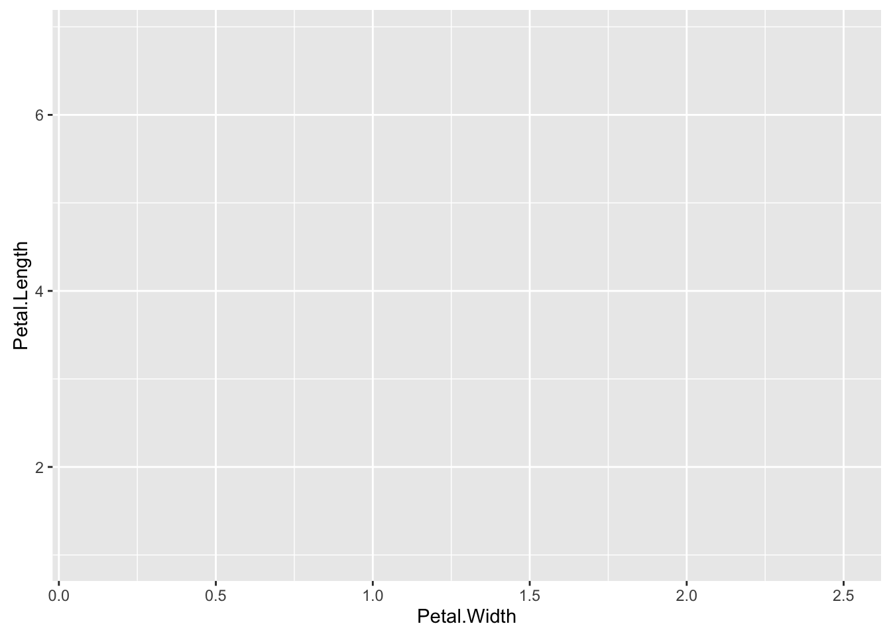
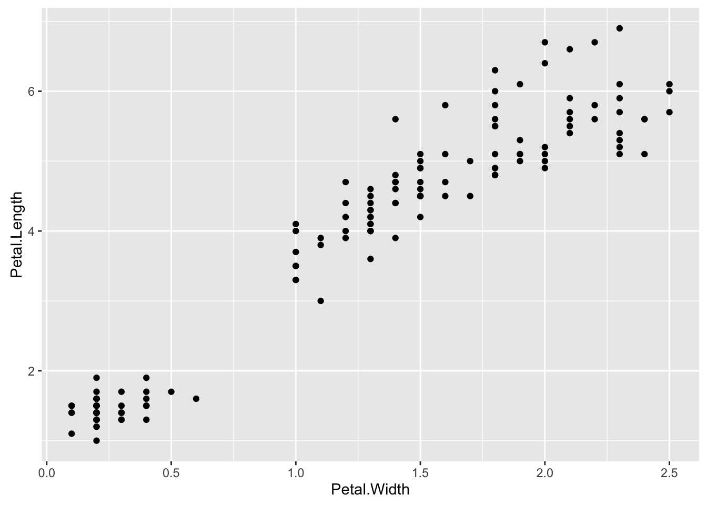
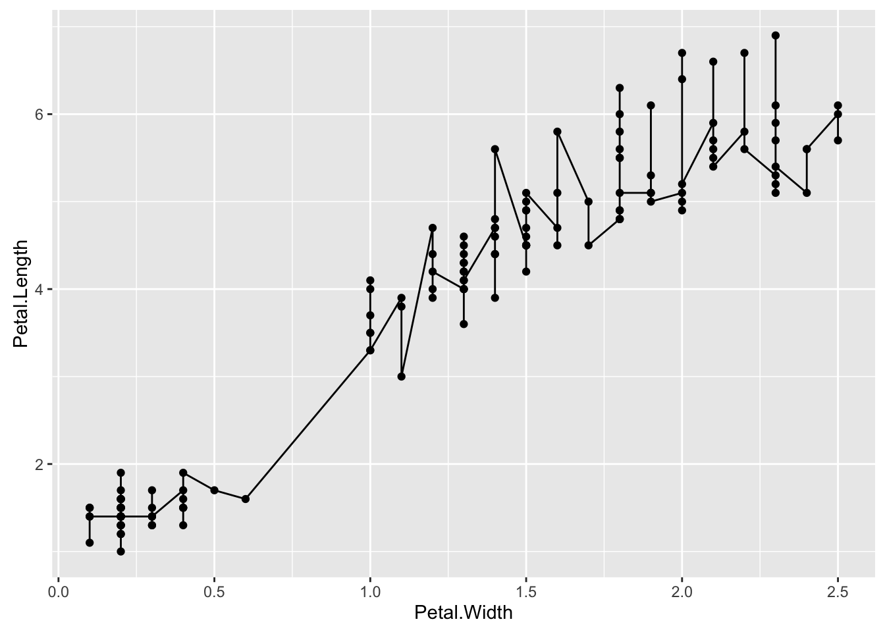

4.2 Building a plot with ggplot2
Loading ggplot2 into memory so we can use it is very easy. With RStudio started, and in the console window type:
library(ggplot2)Nothing should happen, thats a good sign!
4.2 It didn’t load - I got an error
You need to go back and look at the install instructions, using the packages tab in the bottom right hand window of R studio, click
installand typeggplot2into the window that appears. Selectinstalland it should automatically install. If this doesn’t work seek some expert help. {: .callout }
4.2.1 Loading the iris test data
R has some datasets built in that allow us to easily develop analysis. Let’s look at the iris data
iris## Sepal.Length Sepal.Width Petal.Length Petal.Width Species
## 1 5.1 3.5 1.4 0.2 setosa
## 2 4.9 3.0 1.4 0.2 setosa
## 3 4.7 3.2 1.3 0.2 setosa
## 4 4.6 3.1 1.5 0.2 setosa
## 5 5.0 3.6 1.4 0.2 setosa
## 6 5.4 3.9 1.7 0.4 setosa
## 7 4.6 3.4 1.4 0.3 setosa
## 8 5.0 3.4 1.5 0.2 setosa
## 9 4.4 2.9 1.4 0.2 setosa
## 10 4.9 3.1 1.5 0.1 setosa
## 11 5.4 3.7 1.5 0.2 setosa
## 12 4.8 3.4 1.6 0.2 setosa
## 13 4.8 3.0 1.4 0.1 setosa
## 14 4.3 3.0 1.1 0.1 setosa
## 15 5.8 4.0 1.2 0.2 setosa
## 16 5.7 4.4 1.5 0.4 setosa
## 17 5.4 3.9 1.3 0.4 setosa
## 18 5.1 3.5 1.4 0.3 setosa
## 19 5.7 3.8 1.7 0.3 setosa
## 20 5.1 3.8 1.5 0.3 setosa
## 21 5.4 3.4 1.7 0.2 setosa
## 22 5.1 3.7 1.5 0.4 setosa
## 23 4.6 3.6 1.0 0.2 setosa
## 24 5.1 3.3 1.7 0.5 setosa
## 25 4.8 3.4 1.9 0.2 setosa
## 26 5.0 3.0 1.6 0.2 setosa
## 27 5.0 3.4 1.6 0.4 setosa
## 28 5.2 3.5 1.5 0.2 setosa
## 29 5.2 3.4 1.4 0.2 setosa
## 30 4.7 3.2 1.6 0.2 setosa
## 31 4.8 3.1 1.6 0.2 setosa
## 32 5.4 3.4 1.5 0.4 setosa
## 33 5.2 4.1 1.5 0.1 setosa
## 34 5.5 4.2 1.4 0.2 setosa
## 35 4.9 3.1 1.5 0.2 setosa
## 36 5.0 3.2 1.2 0.2 setosa
## 37 5.5 3.5 1.3 0.2 setosa
## 38 4.9 3.6 1.4 0.1 setosa
## 39 4.4 3.0 1.3 0.2 setosa
## 40 5.1 3.4 1.5 0.2 setosa
## 41 5.0 3.5 1.3 0.3 setosa
## 42 4.5 2.3 1.3 0.3 setosa
## 43 4.4 3.2 1.3 0.2 setosa
## 44 5.0 3.5 1.6 0.6 setosa
## 45 5.1 3.8 1.9 0.4 setosa
## 46 4.8 3.0 1.4 0.3 setosa
## 47 5.1 3.8 1.6 0.2 setosa
## 48 4.6 3.2 1.4 0.2 setosa
## 49 5.3 3.7 1.5 0.2 setosa
## 50 5.0 3.3 1.4 0.2 setosa
## 51 7.0 3.2 4.7 1.4 versicolor
## 52 6.4 3.2 4.5 1.5 versicolor
## 53 6.9 3.1 4.9 1.5 versicolor
## 54 5.5 2.3 4.0 1.3 versicolor
## 55 6.5 2.8 4.6 1.5 versicolor
## 56 5.7 2.8 4.5 1.3 versicolor
## 57 6.3 3.3 4.7 1.6 versicolor
## 58 4.9 2.4 3.3 1.0 versicolor
## 59 6.6 2.9 4.6 1.3 versicolor
## 60 5.2 2.7 3.9 1.4 versicolor
## 61 5.0 2.0 3.5 1.0 versicolor
## 62 5.9 3.0 4.2 1.5 versicolor
## 63 6.0 2.2 4.0 1.0 versicolor
## 64 6.1 2.9 4.7 1.4 versicolor
## 65 5.6 2.9 3.6 1.3 versicolor
## 66 6.7 3.1 4.4 1.4 versicolor
## 67 5.6 3.0 4.5 1.5 versicolor
## 68 5.8 2.7 4.1 1.0 versicolor
## 69 6.2 2.2 4.5 1.5 versicolor
## 70 5.6 2.5 3.9 1.1 versicolor
## 71 5.9 3.2 4.8 1.8 versicolor
## 72 6.1 2.8 4.0 1.3 versicolor
## 73 6.3 2.5 4.9 1.5 versicolor
## 74 6.1 2.8 4.7 1.2 versicolor
## 75 6.4 2.9 4.3 1.3 versicolor
## 76 6.6 3.0 4.4 1.4 versicolor
## 77 6.8 2.8 4.8 1.4 versicolor
## 78 6.7 3.0 5.0 1.7 versicolor
## 79 6.0 2.9 4.5 1.5 versicolor
## 80 5.7 2.6 3.5 1.0 versicolor
## 81 5.5 2.4 3.8 1.1 versicolor
## 82 5.5 2.4 3.7 1.0 versicolor
## 83 5.8 2.7 3.9 1.2 versicolor
## 84 6.0 2.7 5.1 1.6 versicolor
## 85 5.4 3.0 4.5 1.5 versicolor
## 86 6.0 3.4 4.5 1.6 versicolor
## 87 6.7 3.1 4.7 1.5 versicolor
## 88 6.3 2.3 4.4 1.3 versicolor
## 89 5.6 3.0 4.1 1.3 versicolor
## 90 5.5 2.5 4.0 1.3 versicolor
## 91 5.5 2.6 4.4 1.2 versicolor
## 92 6.1 3.0 4.6 1.4 versicolor
## 93 5.8 2.6 4.0 1.2 versicolor
## 94 5.0 2.3 3.3 1.0 versicolor
## 95 5.6 2.7 4.2 1.3 versicolor
## 96 5.7 3.0 4.2 1.2 versicolor
## 97 5.7 2.9 4.2 1.3 versicolor
## 98 6.2 2.9 4.3 1.3 versicolor
## 99 5.1 2.5 3.0 1.1 versicolor
## 100 5.7 2.8 4.1 1.3 versicolor
## 101 6.3 3.3 6.0 2.5 virginica
## 102 5.8 2.7 5.1 1.9 virginica
## 103 7.1 3.0 5.9 2.1 virginica
## 104 6.3 2.9 5.6 1.8 virginica
## 105 6.5 3.0 5.8 2.2 virginica
## 106 7.6 3.0 6.6 2.1 virginica
## 107 4.9 2.5 4.5 1.7 virginica
## 108 7.3 2.9 6.3 1.8 virginica
## 109 6.7 2.5 5.8 1.8 virginica
## 110 7.2 3.6 6.1 2.5 virginica
## 111 6.5 3.2 5.1 2.0 virginica
## 112 6.4 2.7 5.3 1.9 virginica
## 113 6.8 3.0 5.5 2.1 virginica
## 114 5.7 2.5 5.0 2.0 virginica
## 115 5.8 2.8 5.1 2.4 virginica
## 116 6.4 3.2 5.3 2.3 virginica
## 117 6.5 3.0 5.5 1.8 virginica
## 118 7.7 3.8 6.7 2.2 virginica
## 119 7.7 2.6 6.9 2.3 virginica
## 120 6.0 2.2 5.0 1.5 virginica
## 121 6.9 3.2 5.7 2.3 virginica
## 122 5.6 2.8 4.9 2.0 virginica
## 123 7.7 2.8 6.7 2.0 virginica
## 124 6.3 2.7 4.9 1.8 virginica
## 125 6.7 3.3 5.7 2.1 virginica
## 126 7.2 3.2 6.0 1.8 virginica
## 127 6.2 2.8 4.8 1.8 virginica
## 128 6.1 3.0 4.9 1.8 virginica
## 129 6.4 2.8 5.6 2.1 virginica
## 130 7.2 3.0 5.8 1.6 virginica
## 131 7.4 2.8 6.1 1.9 virginica
## 132 7.9 3.8 6.4 2.0 virginica
## 133 6.4 2.8 5.6 2.2 virginica
## 134 6.3 2.8 5.1 1.5 virginica
## 135 6.1 2.6 5.6 1.4 virginica
## 136 7.7 3.0 6.1 2.3 virginica
## 137 6.3 3.4 5.6 2.4 virginica
## 138 6.4 3.1 5.5 1.8 virginica
## 139 6.0 3.0 4.8 1.8 virginica
## 140 6.9 3.1 5.4 2.1 virginica
## 141 6.7 3.1 5.6 2.4 virginica
## 142 6.9 3.1 5.1 2.3 virginica
## 143 5.8 2.7 5.1 1.9 virginica
## 144 6.8 3.2 5.9 2.3 virginica
## 145 6.7 3.3 5.7 2.5 virginica
## 146 6.7 3.0 5.2 2.3 virginica
## 147 6.3 2.5 5.0 1.9 virginica
## 148 6.5 3.0 5.2 2.0 virginica
## 149 6.2 3.4 5.4 2.3 virginica
## 150 5.9 3.0 5.1 1.8 virginicaR just printed the whole thing to screen and we end up looking at just the bottom end of it. Let’s look at just the top.
head(iris)## Sepal.Length Sepal.Width Petal.Length Petal.Width Species
## 1 5.1 3.5 1.4 0.2 setosa
## 2 4.9 3.0 1.4 0.2 setosa
## 3 4.7 3.2 1.3 0.2 setosa
## 4 4.6 3.1 1.5 0.2 setosa
## 5 5.0 3.6 1.4 0.2 setosa
## 6 5.4 3.9 1.7 0.4 setosaWe can see that we have the top six rows and we can see that the data is a list of measurments of the sepals and petals for some species of iris. Let’s get a summary of the data set:
summary(iris)## Sepal.Length Sepal.Width Petal.Length Petal.Width
## Min. :4.300 Min. :2.000 Min. :1.000 Min. :0.100
## 1st Qu.:5.100 1st Qu.:2.800 1st Qu.:1.600 1st Qu.:0.300
## Median :5.800 Median :3.000 Median :4.350 Median :1.300
## Mean :5.843 Mean :3.057 Mean :3.758 Mean :1.199
## 3rd Qu.:6.400 3rd Qu.:3.300 3rd Qu.:5.100 3rd Qu.:1.800
## Max. :7.900 Max. :4.400 Max. :6.900 Max. :2.500
## Species
## setosa :50
## versicolor:50
## virginica :50
##
##
## Alright, that’s quite clear, some summary values for each numeric column and note how R has calculated the number of rows of each distinct label for the text column.
4.2.2 A first plot
ggplot2 plots are built up of layers, the foundation layer is the data layer, thats the whole data set containing the bits we would want to plot. We define that with the ggplot2 command.
library(ggplot2)
ggplot(data=iris)Nothing happened, you got a blank screen in the plot window to the right. That’s because a data layer alone doesn’t tell us what, or how to plot. It’s just the source of the numbers we’ll use.
The next thing we need is an aesthetic layer. This is basically the things to look at, and includes:
1. x and y axes (sometimes called position)
2. colour (the line colour of a thing)
3. fill (the block colour of a thing)
4. shape (e.g of points)
5. line type
6. size (e.g of points)Let’s decide to look at petal width and length. We use the aes() function for the aesthetic and we can add layers together with the + operator.
ggplot(data=iris) + aes(x=Petal.Width, y=Petal.Length)
This time we get axes in the plot window. ggplot now knows the data source and the things that should be displayed on the axis, but it doesn’t fully know how to display them. That is done in the geom (or geometric objects) layer. There are loads of geoms e.g
1. `geom_point()` for scatter plots
2. `geom_line()` for trend lines
3. `geom_boxplot()` for boxplots!Let’s add a geom layer.
ggplot(data=iris) + aes(x=Petal.Width, y=Petal.Length) + geom_point()
Now we see the whole plot. The data has been mapped onto the right axes and the geometric objects on top of that. Let’s go crazy and add more layers.
ggplot(data=iris) + aes(x=Petal.Width, y=Petal.Length) + geom_point() + geom_line()
You can see the new geom just adds straight on top of the old one. By default, geom_line() is a simple join the dots sort of line, so it looks really squiggly. Different layers can have their own options set, e.g the points can be coloured.
ggplot(data=iris) + aes(x=Petal.Width, y=Petal.Length) + geom_point(colour="Red") + geom_line()
4.2.2 Making and saving a base plot
There is actually no need to go round typing in the whole command above repetively all the time. ggplot2 layers can be saved to R variables like this:
p <- ggplot(data=iris) + aes(x=Petal.Width, y=Petal.Length)and the bits we want to add or change stuck on top:
p + geom_point()